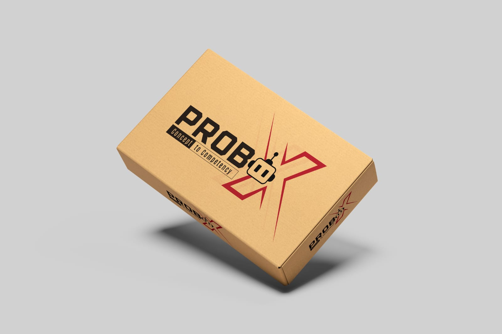

Probo Science
Hands-on experiments mapped to school science concepts, inquiry skills and practical learning.
A hands-on learning solution that helps students explore, build, test and apply concepts through guided activities, projects and practical challenges.

Each category can later open grade-wise kit bundles, kit components, learning outcomes, activity videos and downloadable brochures.
Hands-on experiments mapped to school science concepts, inquiry skills and practical learning.
Creative interdisciplinary activities that turn abstract concepts into visible, student-made outcomes.
Age-appropriate Robotics construction, coding and engineering challenges for active learning.